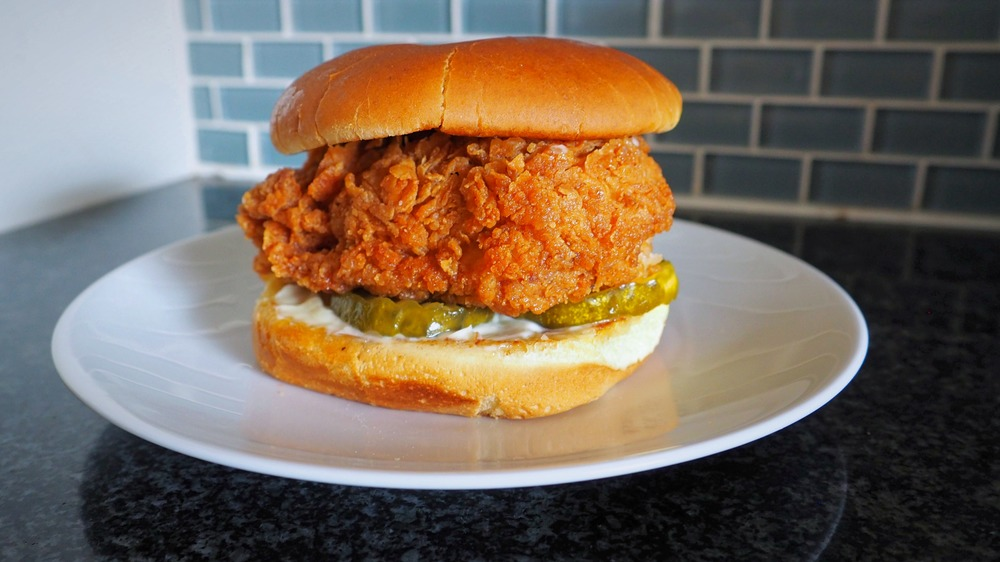

Popeyes Sandwhich

Description
Popeyes Buttermilk fried chicken sandwich with spicy mayo is super crispy, spicy and tastes 1000x BETTER homemade!
Ingredients
For the chicken marinade
- 2 boneless skinless chicken breasts
- 1 cup buttermilk
- 1 teaspoon EACH paprika garlic powder, black pepper, salt
For Breading
- 1 cup flour
- ½ cup corn starch
- 1 tablespoon EACH paprika garlic powder, onion powder, cayenne pepper (for spicy)
- 1 teaspoon EACH salt & pepper
Spicy Mayo
- ½ cup mayo
- 1 teaspoon hot sauce
- 1 teaspoon paprika or cajun or taco seasoning
- 1/2 tsp garlic powder
To Assemble
- 4 medium-sized brioche buns
- Mayonnaise
- Sliced pickles
- 3-4 cups canola oil for frying
Steps
- Pound chicken breasts in between two pieces of parchment paper or plastic wrap. Cut each chicken breast in half crosswise to make 2 small pieces of chicken about the same size as the bun.
- In a large bowl, buttermilk, paprika, garlic powder, salt & black pepper. Add the chicken to the mix and place in the fridge to marinate up to 24 hours or use right away.
- Heat oil in a large heavy-duty skillet or pot on medium temperature or until the temperature reaches 350F.
- In a medium shallow bowl, whisk the flour, cornstarch, and spices. Drizzle 2-3 tablespoons of the buttermilk batter into the flour mixture and mix it through with a fork.
- Working with 1 piece at a time, dredge chicken the flour mixture and press flour on the top chicken to form a thick crust. Transfer chicken to hot oil and fry for 3-5 minutes per side or until the outside is crispy and golden and the internal temperature reaches 165F.
- Melt 1 tablespoon butter in a large saucepan and toast buns face down until golden and crisp. Whisk all the ingredients for the mayo in a small bowl and spread a generous layer of mayo on each bun. Top with pickles and chicken. Enjoy hot!